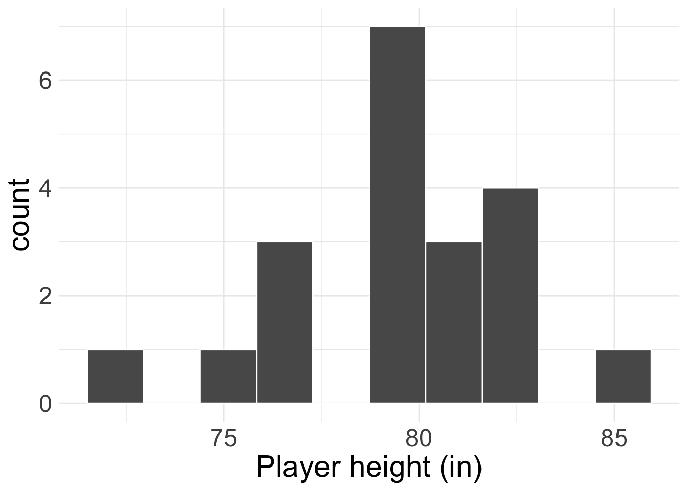
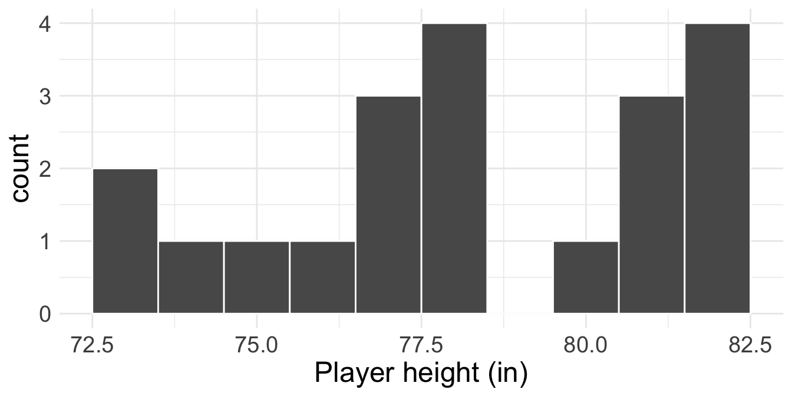
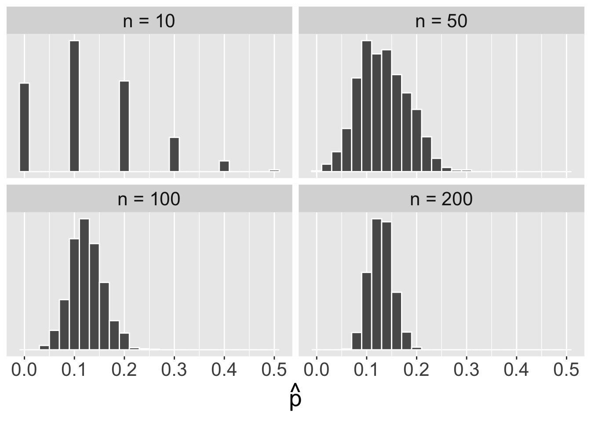

Central Limit Theorem
Housekeeping
- Office hours tomorrow: 10:30am-12:00pm
Recap
Normal distribution: symmetric, bell-shaped curve that is described by mean \(\mu\) and standard deviation \(\sigma\)
- Common model used to describe behavior of continuous variables
Use area under the Normal curve to obtain probabilities
68-95-99.7 rule
Z score standardizes observations to allow for easier comparison: \(\text{z-score} = \frac{x- \mu}{\sigma}\)
Where we’re going
We are going to learn one of the BIGGEST theorems in Statistics
Uses the Normal distribution, and will be immensely helpful for inference tasks of confidence intervals and hypothesis testing
Central Limit Theorem
Central Limit Theorem (CLT)
Assume that you have a sufficiently large sample of \(n\) independent values from a population with mean \(\mu\) and standard deviation \(\sigma\).
Then the distribution of sample means is approximately Normal:
\[ \bar{X} \overset{\cdot}{\sim} N\left(\mu, \frac{\sigma}{\sqrt{n}}\right) \]
- That is, the sampling distribution of the sample mean is approximately normal with mean \(\mu\) and standard error \(\sigma/\sqrt{n}\)
CLT assumptions
Remark #1: does not require any assumption about how the data \(x_{1},\ldots, x_{n}\) behave so long as the following assumptions hold:
- Independent samples: usually achieved by random sampling
- Sufficiently large sample size \(n\). Typically, \(n \geq 30\) will be fine.
Remark #2: if the data \(x_{1},\ldots, x_{n}\) are indeed Normally distributed and independent, then the distribution of sample means is exactly Normal, even for small \(n\)
- Thus, if \(n\) is small, we should check if the data appear approximately Normal in order to use the CLT.
Activity
Height example
The average height of all NBA players in the 2008-9 season is 79.21 inches, with a standard deviation of 3.57 inches. We randomly sample \(20\) of these players and record their heights (see histogram).

What is the sampling distribution of the sample mean heights?
Height example: solution
We have independent samples, but not a large sample size. However, the histogram of the data looks approximately Normal.
So by the CLT: \(\bar{X} \overset{\cdot}{\sim} N\left(79.21, \frac{3.57}{\sqrt{20}}\right)\)
If the data instead looked like the following, given the small sample size, I would not feel comfortable using the CLT

Bank example
Customers are standing in line at a bank. The service time for each customer \(i\) is represented by \(X_{i}\). Suppose that the average service time for all customers is 5 minutes, with a standard deviation of 6 minutes.
Assume that a bank currently has 36 customers in it, and all customers are independent of each other. What is the probability that the average service time of all these customers is less than 4 minutes?
Bank example: solution
We want \(\text{Pr}(\bar{X} < 4)\)
Conditions for CLT met: independence (random sample) and sufficiently large sample size \((n=36)\).
- So by CLT, \(\bar{X} \overset{\cdot}{\sim}N(5, \frac{6}{\sqrt{36}}) = N(5, 1)\)
Using 68-95-99.7 rule, probability that the average service time of all these customers is less than 4 minutes is about \(1 - (0.34 + 0.5) = 0.16\)
CLT for proportions
\[ \hat{p} = \frac{1}{n}\sum_{i=1}^{n} x_{i} \qquad \qquad x_{i} =\{0, 1\} \]
- We see that \(\hat{p}\) is a sample mean! So the CLT applies to proportions as well!
- Typically, \(x_{i} = 1\) is read as “success” and \(x_{i} = 0\) as “failure”, so \(p\) is probability/proportion of success
- CLT for sample proportions: if we have \(n\) independent binary observations with \(np \geq 10\) and \(n(1-p) \geq 10\), then:
\[ \hat{p} \overset{\cdot}{\sim} N\left(p, \sqrt{\frac{p(1-p)}{n}}\right) \]
What do the conditions \(np \geq 10\) and \(n(1-p)\geq 10\) mean?
- For this reason, this is called the “success-failure” condition for CLT for proportions
M&M’s example
Mars, Inc. is the company that makes M&M’s. In 2008, Mars changed their color distribution to have 13% red candies.
Let \(p\) be the proportion of red M&M’s in a random sample of \(n\) M&M’s. If we take random samples of size \(n = 100\), what is the distribution of \(\hat{p}\)? What if \(n = 10\)?
M&M’s example: solution
- We have independence via random sample
If \(n= 100\):
\(np = 100(0.13) = 13 \geq 10\)
\(n(1-p) = 100(0.87) = 87 \geq 10\)
So by CLT:
\[ \begin{align*} \hat{p} &\overset{\cdot}{\sim} N\left(0.13, \sqrt{\frac{0.13(1-0.13)}{100}}\right) \\ &= N(0.13, 0.034 ) \end{align*} \]
- If \(n = 10\):
- \(np = 10(0.13) = 1.3 < 10\)
- So the conditions for CLT are not met and I should not proceed.
M&M’s example (cont.)
The following histograms display sampling distributions for \(\hat{p}\) = proportion of red candies in random samples of size \(n = \{10, 50, 100, 200\}\):

Why is CLT so important?
Let’s statisticians safely assume that the mean’s sampling distribution is approximately Normal. The Normal distribution has nice properties and is easy to work with.
Can be applied to both continuous and discrete numeric data!
Does not depend on the underlying distribution of the data.
- For many of these reasons, we can use the CLT for inference!
Confidence Intervals via CLT
Mathematical CIs
Rather than using simulation techniques (i.e. bootstrap) to obtain the sampling distribution, the CLT gives us the sampling distribution of a mean “for free”
- (assuming conditions are met)
Formula for a \(\gamma \times 100\%\) confidence interval:
\[ \text{point estimate} \pm \underbrace{\text{critical value} \times \text{SE}}_{\text{Margin of Error}} \]
point estimate: the statistic from our observed data (e.g. \(\hat{p}\) and \(\bar{x}\))
SE: standard error of the statistic
critical value: quantity that guarantees the \(\gamma\times 100\). This will vary depending on your data/assumptions
Come take STAT 311 if you want to know how we get this formula!
Towards a CI for a single proportion
Suppose that I have a sample of \(n\) binary values, and I would like to obtain a \(\gamma \times 100\%\) confidence interval for the probability of success \(p\).
If assumptions of CLT for sample proportions hold:
\[ \hat{p} \overset{\cdot}{\sim} N\left(p, \sqrt{\frac{p(1-p)}{n}}\right) \]
How do we know if success-failure condition holds without knowing \(p\)? Let’s use our best guess: \(\hat{p}\)
- So need \(n\hat{p}\) and \(n(1-\hat{p})\) both \(\geq 10\)
Point estimate: observed \(\hat{p}\) from our sample
Standard error: \(\sqrt{p(1-p)/n}\)
- But we still don’t have \(p\)! Instead use the following approximation for CI: \(\text{SE}(\hat{p}) \approx \sqrt{\hat{p}(1-\hat{p})/n}\)
Critical value
So \(\hat{p} \overset{\cdot}{\sim} N\left(p, \sqrt{\frac{\hat{p}(1-\hat{p})}{n}} \right)\)
If we want a \(\gamma \times 100\%\) CI for \(p\), then let’s find the bounds of the middle \(\gamma \times 100\%\) of the Normal distribution above!
These are the \((1-\gamma)/2\) and \((1+\gamma)/2\) percentiles
But…we still don’t know \(p\)
Critical value: instead, we use the percentiles of the standard normal \(N(0,1)\) distribution: \(z_{(1-\gamma)/2}^{*}\) and \(z_{(1+\gamma)/2}^{*}\)
- Since the normal distribution is symmetric, \(z_{(1+\gamma)/2}^{*} = - z_{(1-\gamma)/2}^{*}\)
CI for single proportion
So the formula for a \(\gamma\times 100\%\) CI for \(\hat{p}\) is:
\[ \hat{p} \pm z_{(1+\gamma)/2}^{*}\times \sqrt{\frac{\hat{p}(1-\hat{p})}{n}} \]where the critical values are obtained from \(N(0,1)\) distribution
Example
Consider taking a poll (i.e. random sample) of 100 registered voters in a town and asking them if they support legalized marijuana. It was found that 60% of respondents were in support.
Find a 90% confidence interval for the true proportion of town residents in favor of legalized marijuana.
Conditions for CLT met?
Independence: random sample
Success-failure condition: \(100(0.6) = 60\) and \(100(0.4) = 40\) both \(\geq 10\)
Example (cont.)
Gathering components for CI:
- Point estimate: \(\hat{p}\) = 0.6
- Standard error: \(\text{SE}(\hat{p}) \approx \sqrt{0.6(0.4)/100} \approx 0.049\)
- Critical value: \(z_{0.95}^{*} =\)
qnorm(0.95, mean = 0, sd = 1)\(\approx 1.645\)
So our 90% confidence interval for \(p\) is:
\[ 0.6 \pm 1.645(0.049) = (0.519, 0.681) \]
Interpret the confidence interval in context!
Comprehension questions
What is the main takeaway of the CLT?
What are the assumptions of the CLT?
How do we construct a \(\gamma \times 100\%\) confidence interval?